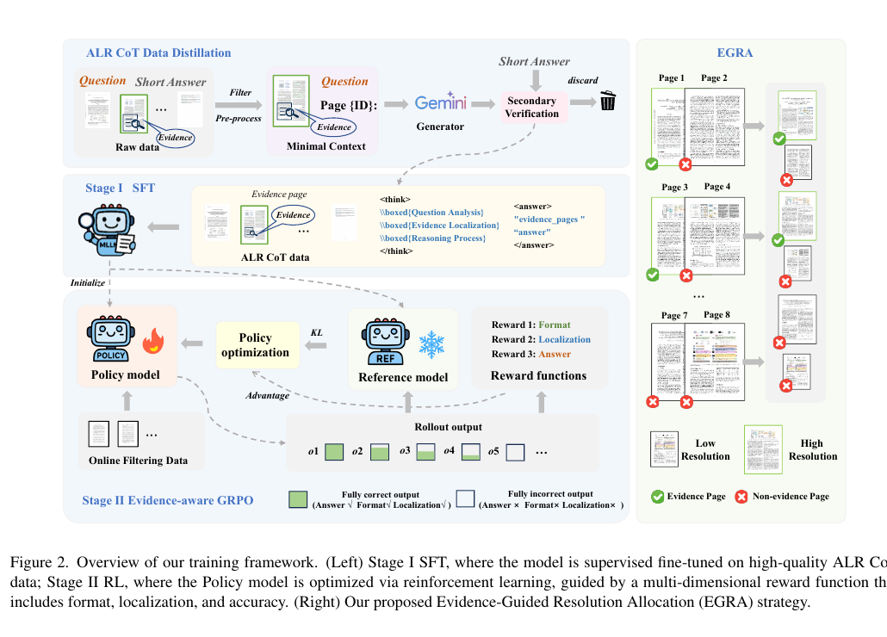
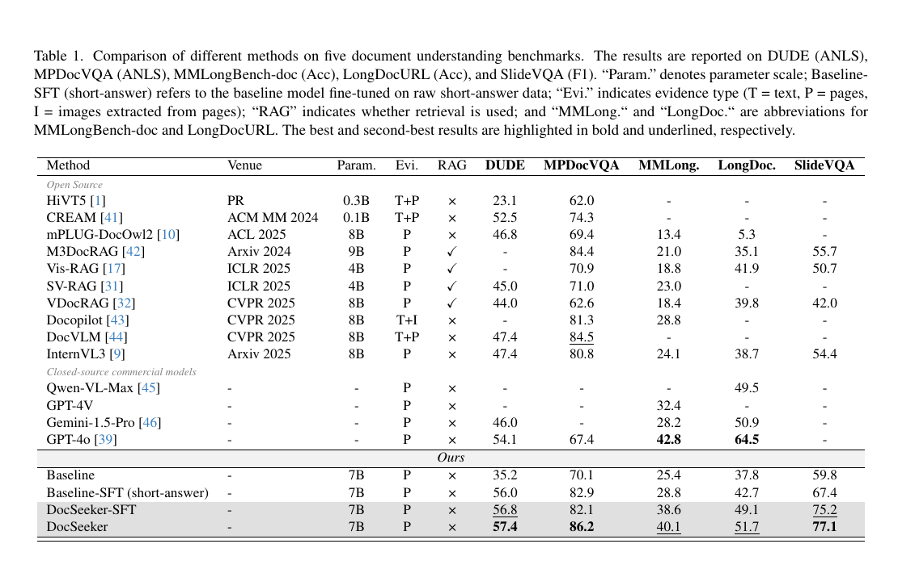
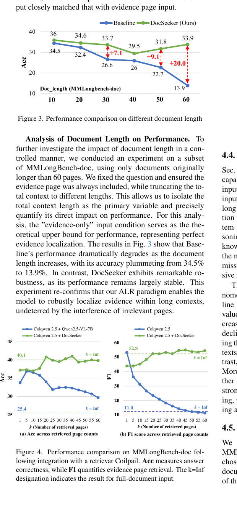

Existing Multimodal Large Language Models (MLLMs) suffer from significant performance degradation on long document understanding as document length increases. DocSeeker addresses this challenge with an Analysis–Localization–Reasoning (ALR) paradigm that first analyzes the question, then localizes evidence pages, and finally performs grounded reasoning before producing the answer. To learn this behavior effectively, DocSeeker combines ALR CoT distillation, Evidence-aware GRPO, and Evidence-Guided Resolution Allocation (EGRA). The resulting model achieves strong gains on both in-domain and out-of-domain benchmarks, improves interpretability through explicit evidence grounding, and integrates naturally with visual RAG pipelines.

Training overview. Stage I injects the ALR reasoning paradigm through supervised fine-tuning on distilled ALR chain-of-thought data. Stage II applies Evidence-aware GRPO to jointly optimize output format, evidence localization, and answer accuracy. During training, EGRA preserves high resolution for evidence pages while reducing computation on non-evidence pages.

Benchmark comparison. DocSeeker improves over the same 7B baseline across DUDE, MP-DocVQA, MMLongBench-doc, LongDocURL, and SlideVQA, and remains competitive with strong commercial systems.

Robustness to document length and retrieval noise. DocSeeker remains more stable as context length grows and shows strong synergy with visual retrieval by tolerating noisier retrieved page sets.
@inproceedings{yan2026docseeker,
title = {DocSeeker: Structured Visual Reasoning with Evidence Grounding for Long Document Understanding},
author = {Hao Yan and Yuliang Liu and Xingchen Liu and Yuyi Zhang and Minghui Liao and Jihao Wu and Wei Chen and Xiang Bai},
booktitle = {Proceedings of the IEEE/CVF Conference on Computer Vision and Pattern Recognition},
year = {2026}
}